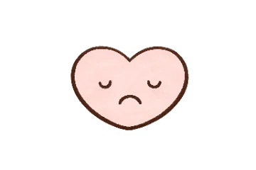
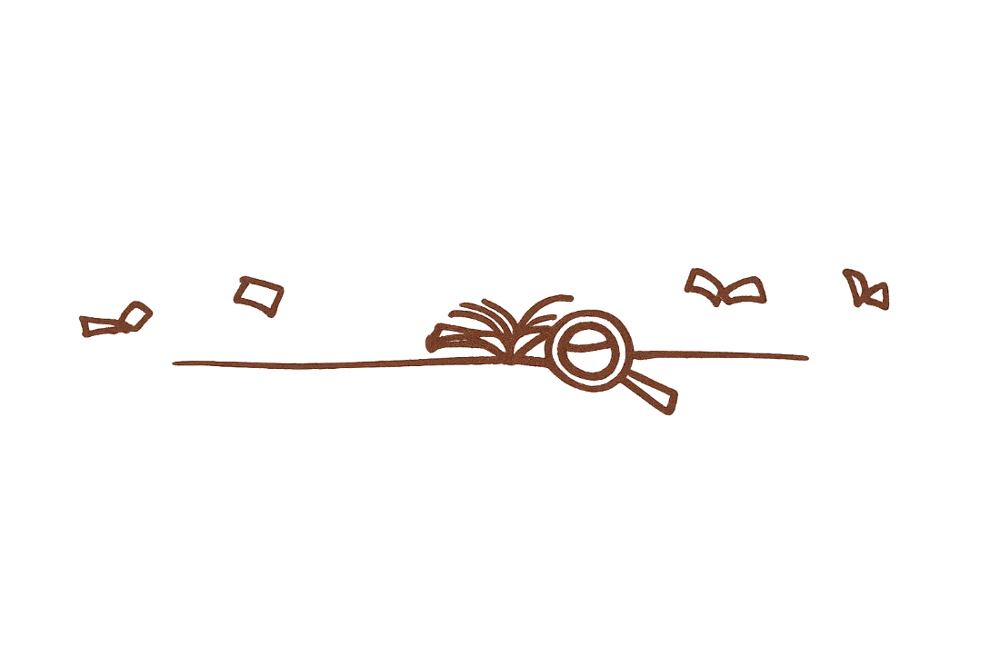
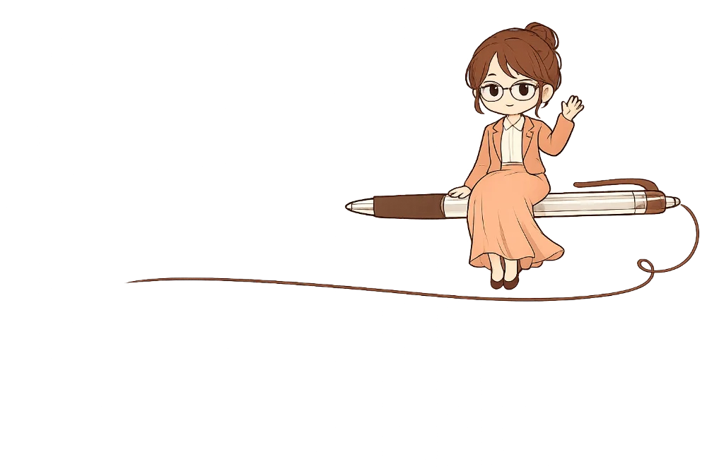
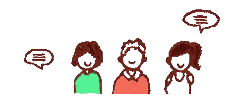

01 沉沒成本多考一年，就是多燒好幾萬元的時間成本
全職準備沒有金援，兼職考生耗費時間精力，這些消耗壓力大到晚上睡不著，賭不起 +365 天的下一年。
你缺的不是努力，而是對的備考方法。
非本科系畢業、備考 3-8 個月、多次報考零落榜的國考學姐，
精準破除你的備考盲點，為你打造穩定上榜的體質。

01 沉沒成本全職準備沒有金援，兼職考生耗費時間精力，這些消耗壓力大到晚上睡不著，賭不起 +365 天的下一年。
很認真苦讀，依然很快就忘。面對龐大的考試範圍，越讀越慌。
不是斷斷續續寫不出來，就是辛苦寫了一堆分數不反映字數。不知道如何寫出具備個人觀點、能抓取閱卷老師眼球的致勝論點。
「今年會不會考上？」面對親友若有似無的關心，交織成巨大的焦慮。在無數個失眠的深夜裡，信心早已全面崩盤。
「沒有方法的認真，是備考過程中CP值最低的付出。」
用 15 分鐘，快速自我診斷你與上榜之間的距離。
為了幫真正想上岸的考生精準止損，學姐特別釋出限量的一對一線上 30 分鐘高效上榜診斷諮詢。
這一場私密的、針對你當下瓶頸的實戰健檢。短短 30 分鐘，我會直接為你點破盲點，帶走切實有用的破局提點。
從考試表現找出強弱科盲點及上榜策略。
揪出你「讀了就忘、答題卡關」的底層原因。
讓你在諮詢後，立刻知道當下該如何調整讀書時間與備考策略。

登出公職，為了不讓自己準備考試零落榜的經驗憑空消失，所以決定分享出來給需要的朋友。

歷年成績單多次報考 0 落榜，每一份都是可被複製的方法。
「我不比你聰明，我只是掌握了實用的底層邏輯。」
曾身為非本科系考生的我，深刻了解盲目苦讀的無助。每次能幸運在短時間內上岸，靠的不是天賦，而是正確、可重複穩定執行的「輸入與輸出方法」。這是一套可以被理解、且能實際落地應用的備考邏輯。
在 30 分鐘的免費線上高效上榜診斷後，如果你發現自己的備考狀態需要更長期的客製化追蹤與高密度調整，學姐也提供全方位的 【6 個月一對一國考高效上岸陪跑計畫】。
這是一場由多次短期速成上榜、實際於公部門任職 10 年的學姐，親自扮演你的備考軍師與進度教練。
✦陪跑計畫包含：
視訊深度對談，依你的當下需要擬定備考策略。每一次，都針對你真實的進度與卡關，做出最精準的下一步。
備考路上不再孤立無援。你可以隨時透過通訊軟體提問，學姐將在 24 小時內親自回覆——做你最穩定的靠山。
因為學姐的時間與精力極其有限，為了保證每一位陪跑學員的最高上岸率，「一對一國考高效上岸陪跑計畫」每個月名額極其稀缺，且不開放直接購買。
我必須透過這 30 分鐘的免費高效上榜診斷諮詢，確認你的決心與狀態，當我們彼此都覺得適合，我才會邀請你加入陪跑計畫。

過去我花了大把時間在死背，直到學姐幫我拆解答題框架，才明白怎樣的答題脈絡更能得高分
白天要上班，晚上讀書常常翻開下一頁就忘上一頁，申論題動筆更是腦袋空白。加入學姐的陪跑後，學姐直接用她多次上榜的備考技巧，幫我把破碎的時間重新配置，並一對一修改我的申論題框架。
她教的是一種看穿考題權重的底層邏輯，讓我不用像以前一樣盲目苦讀，只花 4 個月就掌握了快速拿高分的關鍵，真的讓我少走了好幾年的彎路！
考了好幾次總是以『差一點點』落榜，陷入嚴重的卡分魔咒。是 Z 學姐在 1 對 1 對談中，精準揪出我成績單和讀書計畫裡的致命盲點。
我自認讀得非常努力，課本也滾瓜爛熟，但放榜分數總是卡在尷尬的臨界點，心力交瘁到差點想放棄。
學姐沒有灌我心靈雞湯，而是非常理性、冷靜地像軍師一樣，幫我體檢歷次成績單，指出我申論題裡缺乏個人觀點的死角。這種一對一的陪跑微調，補足了我上榜最關鍵的臨門一腳，讓我用最快的速度終結重考地獄，順利登出國考！
全職準備了快兩年還是沒上，直到加入陪跑計畫，才真正抓對讀書節奏，4 個月就穩定上榜。
之前自己讀書總是東摸西摸，重點抓不到，一天讀 10 小時卻沒有進度感。加入陪跑後，學姐先幫我砍掉一半沒效率的讀書方式，把時間集中在真正會拿分的地方。
每次卡關的時候，文字諮詢當天就有回覆，不會讓我一個人卡在原地亂想。最後這次終於穩穩地考過了，回頭看才發現差別真的在方法，不是努力不夠。
成績單、讀書計畫、申論答題卷等，提供越多診斷越明確
這不是一筆額外的補習開銷，而是一次精準的「及時止損」。
諮詢完能夠立即得到有幫助的備考策略提點，加入陪跑計畫還能幫你省下無效摸索的時間，快速建立適合自己穩定執行的高效備考方法。只要順利上榜，公務員一個月的薪水就能完全賺回你的備考投資。更重要的是，能讓你更早開始領取公職薪資數十萬至百萬。
繼續用舊的方法盲目苦讀。一旦再次落榜，意味著你要多燒一整年的補習費、教材費、生活費，以及少領 1 年以上的公職薪資。
請想想：如果你自己摸索，你要花多少時間才會達成上榜的目標？你需要花多少時間來找到適合自己的有效的備考方法？你目前遇到的困難，你知道要怎樣靠自己突破呢？
與其把時間與金錢花在看不見盡頭的摸索上，不如現在花 30 分鐘，為自己換一條少走彎路的精準航道。無論是否加入陪跑，這 30 分鐘你都會有收穫。
與其等到放榜那天看著分數遺憾、再次消耗 1～2 年的時間與存款，不如現在就跨出第一步。